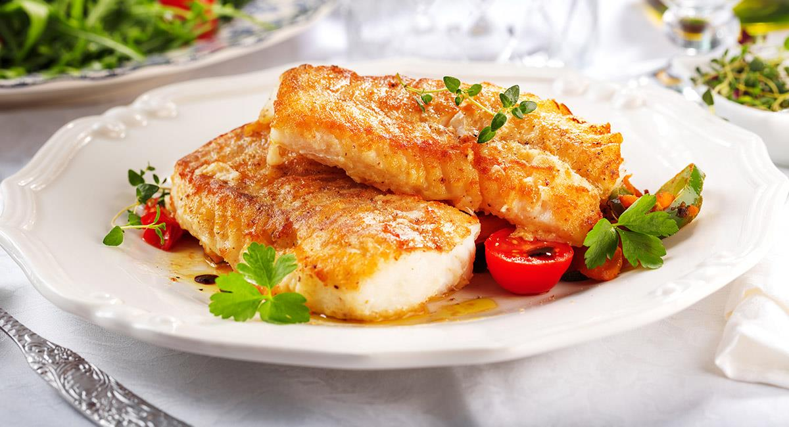

Keperi Beniano
Es un plato preparado con carne vació, jugo de limón, pimienta, comino, ají nomoto, sal y agua. Al keperí al horno se lo acompaña con arroz con queso, ensalada de tomate y lechuga, yuca hervida o frita. Es sencilla la preparación de esta comida y sus ingredientes fáciles de encontrar.
Majadito de Pato
El nombre del plato insigne de la región oriental, es una variación del término “majado” (“golpeado”), que por el acento de la región adopta dicha pronunciación, “Majao”.
Masaco Beniano
La preparación tradicional se realizaba en tacú, aplastando la yuca, plátano o maíz ya cocido hasta formar una masa con trozos pequeños del alimento, actualmente existen preparaciones alternativas con otros tipos de morteros.
Patasca
También es conocida como patasca cruceña (Santa Cruz, Bolivia), no hay duda de que su método de preparación es diferente a la pataca peruana, este es guiso de mote y carnes muy bueno de Bolivia, pero tiene la misma cualidad de curar una resaca como todas las otras patascas.
Surubi al horno

Plato elaborado con surubí (pez de la región), yuca frita, arroz graneado, ensalada de lechuga y tomate. Este plato fue creado gracias a la leyenda del surubí que cuenta que el surubi apareció en un lago de esta región y desde entonces lo preparan.